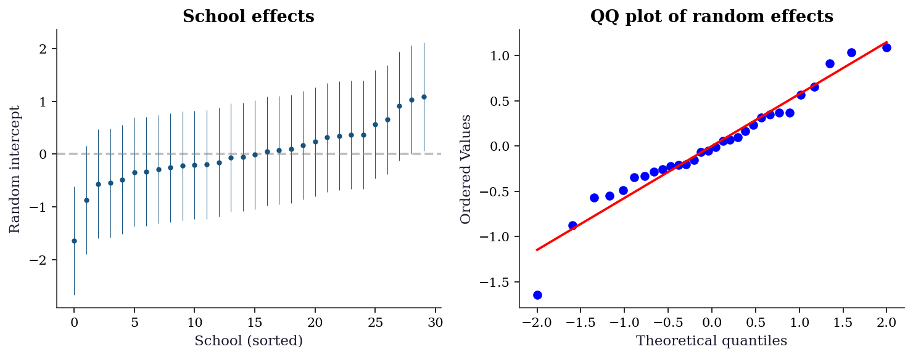
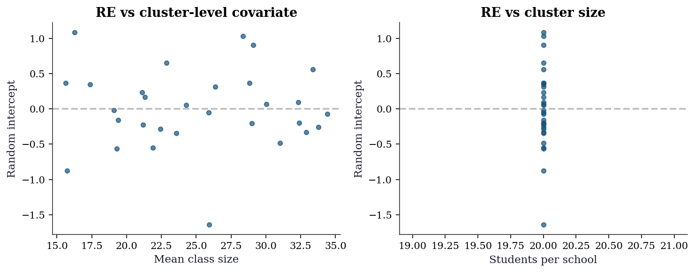
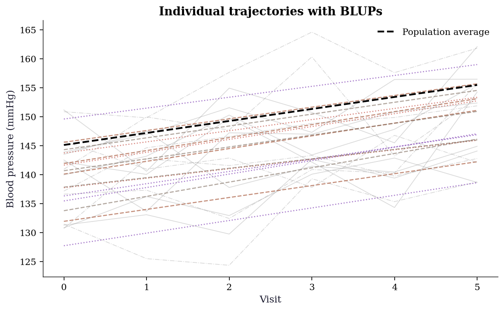

import numpy as np
import matplotlib.pyplot as plt
import pandas as pd
import statsmodels.api as sm
from statsmodels.regression.mixed_linear_model import MixedLM
from statsmodels.genmod.generalized_estimating_equations import GEE
from statsmodels.genmod.cov_struct import (
Exchangeable, Independence, Autoregressive,
)
from scipy import stats
plt.style.use('assets/book.mplstyle')
rng = np.random.default_rng(42)14 Mixed Effects, GEE, and Clustered Data
14.0.1 Notation for this chapter
| Symbol | Meaning | statsmodels |
|---|---|---|
| \(\mathbf{y}_i\) | Response for cluster \(i\) (\(n_i \times 1\)) | endog |
| \(\mathbf{X}_i\) | Fixed-effects design (\(n_i \times p\)) | exog |
| \(\mathbf{Z}_i\) | Random-effects design (\(n_i \times q\)) | exog_re |
| \(\boldsymbol{\beta}\) | Fixed effects | .fe_params |
| \(\mathbf{b}_i\) | Random effects for cluster \(i\) | .random_effects |
| \(\mathbf{D}\) | Random-effects covariance (\(q \times q\)) | .cov_re |
| \(\mathbf{R}_i(\boldsymbol{\alpha})\) | Working correlation matrix (GEE) | cov_struct |
14.1 Motivation
Many datasets have clustered observations: students within schools, patients within hospitals, repeated measurements on the same subject. Standard OLS treats all observations as independent, which produces incorrect standard errors (usually too small) and invalid \(p\)-values.
Two paradigms address clustering:
Mixed models (conditional). Add random effects \(\mathbf{b}_i\) for each cluster: \(\mathbf{y}_i = \mathbf{X}_i\boldsymbol{\beta} + \mathbf{Z}_i\mathbf{b}_i + \boldsymbol{\varepsilon}_i\). The \(\mathbf{b}_i\) are treated as random (normally distributed), estimated via BLUP, and integrated out of the likelihood. Interpretation: \(\boldsymbol{\beta}\) is the effect within a cluster (conditional on the random effects).
GEE (marginal). Model only the mean: \(\mathbb{E}[\mathbf{y}_i] = g^{-1}(\mathbf{X}_i\boldsymbol{\beta})\), with a working correlation \(\mathbf{R}_i(\boldsymbol{\alpha})\) that captures within-cluster dependence. No random effects. Interpretation: \(\boldsymbol{\beta}\) is the population-average effect.
The key difference: Mixed models and GEE estimate different quantities. For linear models with identity link, they give the same fixed-effects estimates. For nonlinear models (logistic, Poisson), they differ—and the choice between them is a modeling decision, not a computational one.
14.2 Mathematical Foundation
14.2.1 The linear mixed model
\[ \mathbf{y}_i = \mathbf{X}_i\boldsymbol{\beta} + \mathbf{Z}_i\mathbf{b}_i + \boldsymbol{\varepsilon}_i, \quad \mathbf{b}_i \sim \mathcal{N}(\mathbf{0}, \mathbf{D}), \quad \boldsymbol{\varepsilon}_i \sim \mathcal{N}(\mathbf{0}, \sigma^2\mathbf{I}). \tag{14.1}\]
The marginal distribution of \(\mathbf{y}_i\) (integrating out \(\mathbf{b}_i\)) is: \(\mathbf{y}_i \sim \mathcal{N}(\mathbf{X}_i\boldsymbol{\beta}, \mathbf{V}_i)\), where \(\mathbf{V}_i = \mathbf{Z}_i\mathbf{D}\mathbf{Z}_i^\top + \sigma^2\mathbf{I}\).
14.2.1.1 REML: correcting the variance bias
REML (Restricted Maximum Likelihood) estimates the variance parameters \((\mathbf{D}, \sigma^2)\) by maximizing a modified likelihood that removes the fixed effects.
The ML log-likelihood for the marginal model \(\mathbf{y}_i \sim \mathcal{N}(\mathbf{X}_i\boldsymbol{\beta}, \mathbf{V}_i)\) is:
\[ \ell_{\text{ML}} = -\frac{1}{2}\sum_{i=1}^G \left[ \log|\mathbf{V}_i| + (\mathbf{y}_i - \mathbf{X}_i\boldsymbol{\beta})^\top \mathbf{V}_i^{-1} (\mathbf{y}_i - \mathbf{X}_i\boldsymbol{\beta}) \right]. \tag{14.2}\]
ML estimates \(\boldsymbol{\beta}\) and the variance components \((\mathbf{D}, \sigma^2)\) jointly. The problem: optimizing over \(\boldsymbol{\beta}\) and variances simultaneously biases the variance estimates downward—the matrix analog of dividing by \(n\) instead of \(n - p\).
REML eliminates \(\boldsymbol{\beta}\) before estimating variances. Project \(\mathbf{y}\) into the \((n - p)\)-dimensional space orthogonal to \(\mathbf{X}\) via any full-rank matrix \(\mathbf{A}\) satisfying \(\mathbf{A}^\top\mathbf{X} = \mathbf{0}\). Then \(\mathbf{A}^\top\mathbf{y} \sim \mathcal{N}(\mathbf{0}, \mathbf{A}^\top\mathbf{V}\mathbf{A})\), and the REML log-likelihood is:
\[ \ell_{\text{REML}} = \ell_{\text{ML}} - \frac{1}{2}\log\left| \sum_{i=1}^G \mathbf{X}_i^\top \mathbf{V}_i^{-1}\mathbf{X}_i \right|. \tag{14.3}\]
The extra term accounts for the \(p\) degrees of freedom consumed by estimating \(\boldsymbol{\beta}\). For balanced one-way ANOVA with \(G\) groups of size \(m\), ML divides by \(G\); REML divides by \(G - 1\). This correction is negligible for large \(G\) but substantial when \(G\) is small—exactly the regime where variance estimation matters most. Statsmodels defaults to reml=True for this reason.
Practical consequence: REML likelihoods are valid for comparing models with different variance structures but the same fixed effects. To compare models with different fixed effects (e.g., adding a covariate), you must use ML (reml=False), as the REML likelihoods are not comparable across different \(\mathbf{X}\) matrices.
14.2.1.2 BLUP: predicting the random effects
The random effects \(\hat{\mathbf{b}}_i\) are not estimated by MLE—they are predicted as the conditional mean \(\mathbb{E}[\mathbf{b}_i \mid \mathbf{y}_i]\). Under the joint normality of \((\mathbf{b}_i, \mathbf{y}_i)\), this conditional expectation has a closed form. Write the joint distribution:
\[ \begin{pmatrix} \mathbf{b}_i \\ \mathbf{y}_i \end{pmatrix} \sim \mathcal{N}\!\left( \begin{pmatrix} \mathbf{0} \\ \mathbf{X}_i\boldsymbol{\beta} \end{pmatrix}, \begin{pmatrix} \mathbf{D} & \mathbf{D}\mathbf{Z}_i^\top \\ \mathbf{Z}_i\mathbf{D} & \mathbf{V}_i \end{pmatrix} \right). \tag{14.4}\]
Applying the standard formula for the conditional mean of a multivariate normal gives the BLUP:
\[ \hat{\mathbf{b}}_i = \mathbf{D}\mathbf{Z}_i^\top\mathbf{V}_i^{-1} (\mathbf{y}_i - \mathbf{X}_i\hat{\boldsymbol{\beta}}). \tag{14.5}\]
For the random-intercept model (\(\mathbf{Z}_i = \mathbf{1}\), \(\mathbf{D} = \sigma^2_b\)), Equation 14.5 simplifies to a scalar shrinkage estimator:
\[ \hat{b}_i = \underbrace{\frac{\sigma^2_b}{\sigma^2_b + \sigma^2_e / n_i}}_{\lambda_i}\;\bar{r}_i, \tag{14.6}\]
where \(\bar{r}_i = n_i^{-1}\sum_j(y_{ij} - \mathbf{x}_{ij}^\top\hat{\boldsymbol{\beta}})\) is the cluster mean residual. The BLUP is a weighted average of the OLS cluster estimate \(\bar{r}_i\) and the prior mean zero, with the weight \(\lambda_i\) determined by the signal-to-noise ratio:
- \(\lambda_i \to 1\) when \(n_i\) is large or \(\sigma^2_b \gg \sigma^2_e\): the cluster has enough data to speak for itself.
- \(\lambda_i \to 0\) when \(n_i\) is small or \(\sigma^2_e \gg \sigma^2_b\): the cluster estimate is noisy, so the BLUP shrinks toward zero.
This is structurally identical to a Bayesian posterior mean under a \(\mathcal{N}(0, \sigma^2_b)\) prior. The shrinkage factor \(\lambda_i\) is the ratio of signal variance to total variance—an ICC computed at the cluster level.
Why shrinkage helps: Consider estimating the average test score for each of 100 schools. A school with 500 students has a reliable sample mean. A school with 5 students has a noisy one. The BLUP “borrows strength” from the population: it barely adjusts the large school’s estimate but pulls the small school’s estimate strongly toward the population mean. This reduces overall prediction error.
When to use mixed models vs GEE:
| Question | Mixed model | GEE |
|---|---|---|
| “What is the effect for a typical individual?” | Yes (subject-specific) | No |
| “What is the population-average effect?” | Not directly | Yes |
| “I need cluster-specific predictions” | Yes (BLUPs) | No |
| “I don’t trust my correlation structure” | Must specify correctly | Robust to misspecification |
| “My outcome is binary/count” | Coefficients differ from GEE | Simpler interpretation |
14.2.2 GEE: the marginal approach
GEE specifies only the first two moments of \(\mathbf{y}_i\):
- Mean: \(\mathbb{E}[y_{ij}] = g^{-1}(\mathbf{x}_{ij}^\top\boldsymbol{\beta})\)
- Working correlation: \(\text{Corr}(y_{ij}, y_{ik}) = r_{jk}(\boldsymbol{\alpha})\)
The estimating equation is: \[ \sum_{i=1}^G \mathbf{X}_i^\top \mathbf{V}_i^{-1}(\mathbf{y}_i - \boldsymbol{\mu}_i) = \mathbf{0}, \tag{14.7}\]
where \(\mathbf{V}_i = \mathbf{A}_i^{1/2} \mathbf{R}_i(\boldsymbol{\alpha}) \mathbf{A}_i^{1/2}\) and \(\mathbf{A}_i = \text{diag}(\text{Var}(\mu_{ij}))\).
The key property: GEE is consistent for \(\boldsymbol{\beta}\) even when the working correlation is wrong. The sandwich covariance corrects for the misspecification. This robustness is why GEE is popular in practice—you don’t need to know the true correlation structure, just a reasonable working guess.
14.2.3 The sandwich variance
GEE uses a sandwich (Huber–White) covariance estimator that provides valid inference even when the working correlation is misspecified. Define the model-based and empirical components:
\[ \mathbf{B} = \sum_{i=1}^G \mathbf{X}_i^\top \mathbf{V}_i^{-1}\mathbf{X}_i, \qquad \mathbf{M} = \sum_{i=1}^G \mathbf{X}_i^\top \mathbf{V}_i^{-1} (\mathbf{y}_i - \boldsymbol{\mu}_i) (\mathbf{y}_i - \boldsymbol{\mu}_i)^\top \mathbf{V}_i^{-1}\mathbf{X}_i. \tag{14.8}\]
The sandwich covariance is:
\[ \widehat{\text{Var}}(\hat{\boldsymbol{\beta}}) = \mathbf{B}^{-1}\mathbf{M}\mathbf{B}^{-1}. \tag{14.9}\]
Why this works when the working correlation is wrong: \(\mathbf{B}\) depends on the assumed working covariance \(\mathbf{V}_i\), which may be misspecified. But \(\mathbf{M}\) uses the actual residuals \((\mathbf{y}_i - \boldsymbol{\mu}_i)\) to capture the true variability. If the working correlation were correct, \(\mathbf{M} \to \mathbf{B}\) and the sandwich collapses to the model-based variance \(\mathbf{B}^{-1}\)—the usual GLS result. When the working correlation is wrong, \(\mathbf{M} \neq \mathbf{B}\), and the sandwich corrects for the discrepancy.
The cost of this robustness: the sandwich estimator requires \(G \to \infty\) for consistency (each cluster contributes one “observation” to \(\mathbf{M}\)). With few clusters (\(G < 30\)), the sandwich underestimates variability and coverage drops below nominal. We demonstrate this failure in Section 14.7.
14.3 The Algorithm
14.4 Statistical Properties
Mixed models vs GEE: For a binary outcome (logistic), the mixed-model \(\beta\) and the GEE \(\beta\) estimate different things:
- Mixed model: \(\log\frac{\Pr(y=1 \mid \mathbf{x}, b)}{1-\Pr(y=1 \mid \mathbf{x}, b)} = \mathbf{x}^\top\boldsymbol{\beta} + b\) → subject-specific effect.
- GEE: \(\log\frac{\Pr(y=1 \mid \mathbf{x})}{1-\Pr(y=1 \mid \mathbf{x})} = \mathbf{x}^\top\boldsymbol{\beta}\) → population-average effect.
The subject-specific \(\beta\) is always larger in magnitude than the population-average \(\beta\) (because averaging over the random effect attenuates the relationship). The ratio depends on the random-effect variance.
GEE robustness: The sandwich SE is consistent regardless of the working correlation. But the efficiency depends on how close the working correlation is to the truth. Exchangeable is often good enough; independence (ignoring clustering) gives valid inference but wider CIs.
14.4.1 Marginal ≠ conditional: a simulation
For linear models, MixedLM and GEE give the same \(\hat{\boldsymbol{\beta}}\). For nonlinear models, they estimate different quantities. The reason is Jensen’s inequality: for a nonlinear function \(g\) and a random variable \(b\), \(\mathbb{E}[g(\eta + b)] \neq g(\eta + \mathbb{E}[b])\).
In a logistic GLMM, the subject-specific probability is \(p(x, b) = \text{logit}^{-1}(\beta x + b)\). The population-average probability \(\bar{p}(x) = \mathbb{E}_b[\text{logit}^{-1}(\beta x + b)]\) is flatter than the subject-specific curve because the S-shaped logistic function is averaged over a spread of intercepts. A flatter curve means a smaller effective slope.
The Zeger–Liang–Albert (1988) approximation gives: \(\beta_{\text{GEE}} \approx \beta_{\text{GLMM}} / \sqrt{1 + c^2\sigma^2_b}\), where \(c^2 = 16\sqrt{3}/(15\pi) \approx 0.588\).
# Simulate logistic GLMM to show attenuation
from statsmodels.genmod.families import Binomial
n_groups_sim, n_obs_sim = 200, 20
sigma_b_true = 1.0
beta_true = 1.0
group_sim = np.repeat(np.arange(n_groups_sim), n_obs_sim)
b_sim = sigma_b_true * rng.standard_normal(n_groups_sim)
x_sim = rng.standard_normal(n_groups_sim * n_obs_sim)
eta = beta_true * x_sim + b_sim[group_sim]
prob = 1 / (1 + np.exp(-eta))
y_sim = rng.binomial(1, prob)
df_sim = pd.DataFrame({
'y': y_sim, 'x': x_sim,
'group': group_sim,
})
# GEE (marginal)
gee_logit = GEE.from_formula(
'y ~ x', groups='group', data=df_sim,
family=Binomial(),
cov_struct=Exchangeable(),
).fit()
c2 = 16 * np.sqrt(3) / (15 * np.pi)
approx = beta_true / np.sqrt(1 + c2 * sigma_b_true**2)
print(f"True conditional (GLMM) beta: {beta_true:.3f}")
print(f"GEE estimate (marginal): "
f"{gee_logit.params['x']:.3f}")
print(f"Zeger-Liang-Albert approx: {approx:.3f}")
print(f"\nAttenuation factor: "
f"{gee_logit.params['x']/beta_true:.3f}")
print(f"The marginal beta is always smaller —")
print(f"averaging over random effects flattens "
f"the dose-response curve.")True conditional (GLMM) beta: 1.000
GEE estimate (marginal): 0.886
Zeger-Liang-Albert approx: 0.794
Attenuation factor: 0.886
The marginal beta is always smaller —
averaging over random effects flattens the dose-response curve.The attenuation grows with \(\sigma^2_b\): larger between-cluster variation means more averaging, which flattens the marginal curve further. This is not a bias—GEE and the GLMM are estimating different parameters. The choice between them is a modeling decision about which parameter answers your scientific question.
14.5 Statsmodels Implementation
14.5.1 MixedLM: linear mixed model
# Simulate clustered data: students within schools
n_schools = 30
n_students = 20
n = n_schools * n_students
school = np.repeat(np.arange(n_schools), n_students)
class_size = rng.uniform(15, 35, n_schools)[school]
aptitude = rng.standard_normal(n)
# Random intercept per school
school_effect = rng.standard_normal(n_schools)
y_score = (50 + 5*aptitude - 0.3*class_size
+ school_effect[school]
+ 3*rng.standard_normal(n))
df = pd.DataFrame({
'score': y_score,
'aptitude': aptitude,
'class_size': class_size,
'school': school,
})
# Fit mixed model with random intercept
mlm = MixedLM.from_formula(
'score ~ aptitude + class_size',
groups='school',
data=df,
).fit(reml=True)
print(mlm.summary().tables[1])
print(f"\nRandom effects variance: {mlm.cov_re.iloc[0,0]:.3f}")
print(f"Residual variance: {mlm.scale:.3f}")
print(f"ICC: {mlm.cov_re.iloc[0,0]/(mlm.cov_re.iloc[0,0]+mlm.scale):.3f}") Coef. Std.Err. z P>|z| [0.025 0.975]
Intercept 48.747 0.861 56.647 0.000 47.060 50.433
aptitude 4.874 0.139 35.056 0.000 4.601 5.146
class_size -0.264 0.033 -7.914 0.000 -0.329 -0.198
school Var 0.608 0.096
Random effects variance: 0.608
Residual variance: 10.124
ICC: 0.057Key parameters:
groups: cluster variable (school, patient, etc.)re_formula='~1'(default): random intercept onlyre_formula='~x': random slope onx(adds cluster-level slope variation). Use this when the effect ofxplausibly varies across clusters—e.g., treatment response varies by patient, or the time trend differs across sites. The model estimates a \(2 \times 2\) covariance matrix \(\mathbf{D}\) for the intercept–slope pair.reml=True(default): REML estimation for variance componentsreml=False: ML estimation (needed for LR tests comparing models with different fixed effects)
New cluster prediction: BLUPs for clusters in the training data use Equation 14.5. For a new cluster not seen during fitting, \(\hat{\mathbf{b}}_{\text{new}} = \mathbf{0}\)—the prediction reverts to the population average. This is by design: with no data from the new cluster, the best prediction is the prior mean.
14.5.2 GEE: marginal model
# Same data, GEE approach
for struct_name, struct in [
('Independence', Independence()),
('Exchangeable', Exchangeable()),
]:
gee_res = GEE.from_formula(
'score ~ aptitude + class_size',
groups='school',
data=df,
cov_struct=struct,
).fit()
print(f"{struct_name:>14}: aptitude={gee_res.params['aptitude']:.3f} "
f"(SE={gee_res.bse['aptitude']:.3f}), "
f"class_size={gee_res.params['class_size']:.3f} "
f"(SE={gee_res.bse['class_size']:.3f})") Independence: aptitude=4.863 (SE=0.114), class_size=-0.264 (SE=0.030)
Exchangeable: aptitude=4.873 (SE=0.118), class_size=-0.264 (SE=0.030)Working correlation structures:
| Structure | cov_struct |
Parameters | Best for |
|---|---|---|---|
| Independence | Independence() |
0 | Robust but inefficient |
| Exchangeable | Exchangeable() |
1 (\(\rho\)) | Clustered data (schools, hospitals) |
| AR(1) | Autoregressive() |
1 (\(\rho\)) | Longitudinal (repeated measures) |
| Unstructured | Unstructured() |
\(n_i(n_i-1)/2\) | Small clusters, many params |
14.5.3 Mixed model vs GEE comparison
print(f"{'':>14} {'MixedLM':>10} {'GEE (Exch)':>12}")
print(f"{'aptitude':>14} {mlm.fe_params['aptitude']:>10.3f} "
f"{gee_res.params['aptitude']:>12.3f}")
print(f"{'class_size':>14} {mlm.fe_params['class_size']:>10.3f} "
f"{gee_res.params['class_size']:>12.3f}")
print(f"\nFor linear models, fixed-effect estimates agree.")
print("They would differ for logistic or Poisson models.") MixedLM GEE (Exch)
aptitude 4.874 4.873
class_size -0.264 -0.264
For linear models, fixed-effect estimates agree.
They would differ for logistic or Poisson models.14.6 From-Scratch Implementation
14.6.1 Random intercept model via EM
def lmm_random_intercept(y, X, groups, maxiter=100, tol=1e-6):
"""Linear mixed model with random intercept via EM.
Model: y_ij = X_ij @ beta + b_i + e_ij
b_i ~ N(0, sigma2_b), e_ij ~ N(0, sigma2_e)
Parameters
----------
y : array (n,)
X : array (n, p)
groups : array (n,) — cluster labels
"""
unique_groups = np.unique(groups)
G = len(unique_groups)
n, p = X.shape
# Initialize
ols = sm.OLS(y, X).fit()
beta = ols.params.copy()
sigma2_e = ols.scale
sigma2_b = 1.0
for iteration in range(maxiter):
# E-step: predict random effects
b_hat = np.zeros(G)
for g_idx, g in enumerate(unique_groups):
mask = groups == g
n_g = mask.sum()
r_g = y[mask] - X[mask] @ beta
# Posterior mean of b_i | y_i
b_hat[g_idx] = (sigma2_b / (sigma2_b + sigma2_e/n_g)) * r_g.mean()
# M-step: update beta, sigma2_e, sigma2_b
# Beta: OLS on y - Z*b_hat
y_adj = y - b_hat[groups.astype(int)]
beta_new = np.linalg.solve(X.T @ X, X.T @ y_adj)
# Variance components
resid = y - X @ beta_new - b_hat[groups.astype(int)]
sigma2_e_new = np.sum(resid**2) / n
# sigma2_b: includes posterior variance correction
post_var = np.array([
sigma2_b * sigma2_e / (n_g * sigma2_b + sigma2_e)
for g, n_g in zip(unique_groups,
[np.sum(groups == g) for g in unique_groups])
])
sigma2_b_new = (np.sum(b_hat**2) + np.sum(post_var)) / G
# Check convergence
if (abs(sigma2_b_new - sigma2_b) < tol and
abs(sigma2_e_new - sigma2_e) < tol):
break
beta, sigma2_e, sigma2_b = beta_new, sigma2_e_new, sigma2_b_new
return {
'beta': beta, 'sigma2_e': sigma2_e, 'sigma2_b': sigma2_b,
'b_hat': b_hat, 'nit': iteration,
}X_arr = sm.add_constant(df[['aptitude', 'class_size']].values)
groups_arr = df['school'].values
res_ours = lmm_random_intercept(y_score, X_arr, groups_arr)
print(f"{'':>14} {'From-scratch':>14} {'statsmodels':>14}")
print(f"{'aptitude':>14} {res_ours['beta'][1]:>14.3f} "
f"{mlm.fe_params['aptitude']:>14.3f}")
print(f"{'class_size':>14} {res_ours['beta'][2]:>14.3f} "
f"{mlm.fe_params['class_size']:>14.3f}")
print(f"{'sigma2_b':>14} {res_ours['sigma2_b']:>14.3f} "
f"{mlm.cov_re.iloc[0,0]:>14.3f}")
print(f"{'sigma2_e':>14} {res_ours['sigma2_e']:>14.3f} "
f"{mlm.scale:>14.3f}") From-scratch statsmodels
aptitude 4.873 4.874
class_size -0.264 -0.264
sigma2_b 0.547 0.608
sigma2_e 9.834 10.12414.6.2 BLUP from scratch
The from-scratch EM above already computes BLUPs in its E-step. Here we verify the shrinkage formula Equation 14.6 against statsmodels’ .random_effects.
sigma2_b_hat = res_ours['sigma2_b']
sigma2_e_hat = res_ours['sigma2_e']
beta_hat = res_ours['beta']
blup_scratch = np.zeros(n_schools)
for g in range(n_schools):
mask = groups_arr == g
n_g = mask.sum()
resid_g = y_score[mask] - X_arr[mask] @ beta_hat
lam = sigma2_b_hat / (sigma2_b_hat + sigma2_e_hat / n_g)
blup_scratch[g] = lam * resid_g.mean()
# Compare to statsmodels
re_sm = mlm.random_effects
blup_sm = np.array([re_sm[g].iloc[0] for g in re_sm])
print("BLUP verification (first 8 schools):")
print(f"{'School':>7} {'Scratch':>10} {'statsmodels':>12} "
f"{'Shrinkage':>10}")
for g in range(8):
mask = groups_arr == g
n_g = mask.sum()
lam = sigma2_b_hat / (
sigma2_b_hat + sigma2_e_hat / n_g
)
print(f"{g:>7} {blup_scratch[g]:>10.4f} "
f"{blup_sm[g]:>12.4f} {lam:>10.4f}")BLUP verification (first 8 schools):
School Scratch statsmodels Shrinkage
0 -0.5309 -0.5499 0.5268
1 0.8779 0.9092 0.5268
2 0.6309 0.6535 0.5268
3 -0.1518 -0.1572 0.5268
4 0.0509 0.0528 0.5268
5 0.0686 0.0710 0.5268
6 0.3337 0.3457 0.5268
7 0.3529 0.3654 0.526814.6.3 GEE from scratch
One pass of the iteratively reweighted GEE, computing the sandwich covariance by hand.
def gee_one_pass(y, X, groups, rho=0.0):
"""One-step GEE with exchangeable correlation.
Implements Algorithm 14.1 for a single iteration
starting from OLS, with identity link and constant
variance (Gaussian GEE).
Parameters
----------
y : array (n,)
X : array (n, p) — design matrix with intercept
groups : array (n,) — cluster labels
rho : float — exchangeable correlation parameter
Returns
-------
dict with beta, sandwich_se, model_se
"""
unique_g = np.unique(groups)
G = len(unique_g)
p = X.shape[1]
# Step 1: initialize from OLS
beta = np.linalg.solve(X.T @ X, X.T @ y)
resid = y - X @ beta
# Estimate sigma^2 from pooled residuals
sigma2 = np.sum(resid**2) / (len(y) - p)
# Step 2: build sandwich components
B = np.zeros((p, p)) # bread
M = np.zeros((p, p)) # meat
beta_new_num = np.zeros(p)
for g in unique_g:
mask = groups == g
Xi = X[mask]
yi = y[mask]
ni = mask.sum()
# Working covariance: sigma^2 * [(1-rho)I + rho*11']
R = (1 - rho) * np.eye(ni) + rho * np.ones(
(ni, ni)
)
Vi = sigma2 * R
Vi_inv = np.linalg.inv(Vi)
# Bread
B += Xi.T @ Vi_inv @ Xi
# GEE update (modified Fisher scoring)
ri = yi - Xi @ beta
beta_new_num += Xi.T @ Vi_inv @ yi
# Meat (using actual residuals)
M += Xi.T @ Vi_inv @ np.outer(ri, ri) \
@ Vi_inv @ Xi
# Updated beta (one GEE step)
beta_gee = np.linalg.solve(B, beta_new_num)
# Recompute meat with updated residuals
M2 = np.zeros((p, p))
for g in unique_g:
mask = groups == g
Xi = X[mask]
ri = y[mask] - Xi @ beta_gee
ni = mask.sum()
R = (1 - rho) * np.eye(ni) + rho * np.ones(
(ni, ni)
)
Vi_inv = np.linalg.inv(sigma2 * R)
M2 += Xi.T @ Vi_inv @ np.outer(ri, ri) \
@ Vi_inv @ Xi
B_inv = np.linalg.inv(B)
sandwich_cov = B_inv @ M2 @ B_inv
model_cov = B_inv
return {
'beta': beta_gee,
'sandwich_se': np.sqrt(np.diag(sandwich_cov)),
'model_se': np.sqrt(np.diag(model_cov)),
}# Fit with rho estimated from statsmodels
gee_exch = GEE.from_formula(
'score ~ aptitude + class_size',
groups='school', data=df,
cov_struct=Exchangeable(),
).fit()
# Extract estimated rho
rho_hat = gee_exch.cov_struct.summary()
print(f"Estimated exchangeable rho:\n{rho_hat}\n")
# Our from-scratch version
res_gee = gee_one_pass(
y_score, X_arr, groups_arr, rho=0.1
)
print(f"{'':>14} {'Scratch':>10} {'statsmodels':>12}")
for j, name in enumerate(
['Intercept', 'aptitude', 'class_size']
):
print(f"{name:>14} {res_gee['beta'][j]:>10.3f} "
f"{gee_exch.params.iloc[j]:>12.3f}")
print(f"\nSandwich vs model-based SE:")
print(f"{'':>14} {'Sandwich':>10} {'Model':>10}")
for j, name in enumerate(
['Intercept', 'aptitude', 'class_size']
):
print(f"{name:>14} "
f"{res_gee['sandwich_se'][j]:>10.3f} "
f"{res_gee['model_se'][j]:>10.3f}")Estimated exchangeable rho:
The correlation between two observations in the same cluster is 0.050
Scratch statsmodels
Intercept 48.747 48.747
aptitude 4.877 4.873
class_size -0.264 -0.264
Sandwich vs model-based SE:
Sandwich Model
Intercept 0.818 1.015
aptitude 0.120 0.136
class_size 0.030 0.03914.7 Diagnostics
14.7.1 ICC: Intraclass Correlation Coefficient
# ICC = sigma2_b / (sigma2_b + sigma2_e)
icc = mlm.cov_re.iloc[0,0] / (mlm.cov_re.iloc[0,0] + mlm.scale)
print(f"ICC = {icc:.3f}")
print(f"Interpretation: {icc:.0%} of the variance in scores is")
print(f"between schools (the rest is within schools).")
print(f"\nICC > 0.05 generally justifies a mixed model over OLS.")ICC = 0.057
Interpretation: 6% of the variance in scores is
between schools (the rest is within schools).
ICC > 0.05 generally justifies a mixed model over OLS.14.7.2 Random effects diagnostics
re = mlm.random_effects
re_vals = np.array([re[g].iloc[0] for g in re])
re_se = np.sqrt(np.array([
mlm.cov_re.iloc[0,0] * mlm.scale /
(df['school'].value_counts()[g] * mlm.cov_re.iloc[0,0] + mlm.scale)
for g in re
]))
order = np.argsort(re_vals)
fig, (ax1, ax2) = plt.subplots(1, 2, figsize=(10, 4))
ax1.errorbar(range(len(re_vals)), re_vals[order],
yerr=1.96*re_se[order], fmt='o', markersize=3,
color="C0", elinewidth=0.5)
ax1.axhline(0, color="gray", linestyle="--", alpha=0.5)
ax1.set_xlabel("School (sorted)")
ax1.set_ylabel("Random intercept")
ax1.set_title("School effects")
stats.probplot(re_vals, plot=ax2)
ax2.set_title("QQ plot of random effects")
plt.tight_layout()
plt.show()
14.7.3 Level-2 residual diagnostics
The random effects themselves are diagnostic targets. Plotting \(\hat{b}_i\) against cluster-level covariates detects misspecified level-2 models (e.g., a missing cluster-level predictor).
# Compute school-level covariates
school_means = df.groupby('school').agg(
mean_class=('class_size', 'mean'),
n_students=('score', 'count'),
).reset_index()
re_vals = np.array([
mlm.random_effects[g].iloc[0]
for g in range(n_schools)
])
fig, (ax1, ax2) = plt.subplots(1, 2, figsize=(10, 4))
ax1.scatter(school_means['mean_class'], re_vals,
s=20, alpha=0.7)
ax1.axhline(0, color="gray", ls="--", alpha=0.5)
ax1.set_xlabel("Mean class size")
ax1.set_ylabel("Random intercept")
ax1.set_title("RE vs cluster-level covariate")
ax2.scatter(school_means['n_students'], re_vals,
s=20, alpha=0.7)
ax2.axhline(0, color="gray", ls="--", alpha=0.5)
ax2.set_xlabel("Students per school")
ax2.set_ylabel("Random intercept")
ax2.set_title("RE vs cluster size")
plt.tight_layout()
plt.show()
14.7.4 Comparing working correlations (QIC)
The Quasi-likelihood under the Independence model Criterion (QIC) extends AIC to GEE. Lower QIC indicates a better working correlation. Unlike AIC for likelihood-based models, QIC uses the quasi-likelihood evaluated under independence, which makes values comparable across different working correlations.
print(f"{'Structure':<16} {'QIC':>10} {'QICu':>10}")
for name, struct in [
('Independence', Independence()),
('Exchangeable', Exchangeable()),
('AR(1)', Autoregressive()),
]:
res = GEE.from_formula(
'score ~ aptitude + class_size', groups='school',
data=df, cov_struct=struct,
).fit()
qic, qicu = res.qic()
print(f"{name:<16} {qic:>10.1f} {qicu:>10.1f}")
print("\nQIC = quasi-likelihood model fit criterion")
print("QICu = quasi-likelihood model selection (for "
"choosing covariates under independence)")
print("Lower is better for both.")Structure QIC QICu
Independence 605.6 603.0
Exchangeable 605.7 603.0
AR(1) 605.5 603.0
QIC = quasi-likelihood model fit criterion
QICu = quasi-likelihood model selection (for choosing covariates under independence)
Lower is better for both.14.7.5 The few-clusters problem
The sandwich estimator is a large-\(G\) result. With few clusters, it underestimates variability and confidence intervals are too narrow. This simulation demonstrates the coverage failure.
def gee_coverage_sim(n_groups, n_per, n_sims=500):
"""Simulate GEE coverage for varying G."""
covers = 0
for _ in range(n_sims):
grp = np.repeat(np.arange(n_groups), n_per)
b = rng.standard_normal(n_groups)
x = rng.standard_normal(n_groups * n_per)
y = 2 + 3*x + b[grp] + rng.standard_normal(
n_groups * n_per
)
d = pd.DataFrame({
'y': y, 'x': x, 'g': grp,
})
try:
r = GEE.from_formula(
'y ~ x', groups='g', data=d,
cov_struct=Exchangeable(),
).fit(maxiter=50)
ci = r.conf_int().loc['x']
if ci.iloc[0] <= 3.0 <= ci.iloc[1]:
covers += 1
except Exception:
pass
return covers / n_sims
print(f"{'Groups G':>10} {'Coverage':>10} (nominal=95%)")
for G in [10, 20, 30, 50, 100]:
cov = gee_coverage_sim(G, 10, n_sims=400)
flag = " <-- poor" if cov < 0.90 else ""
print(f"{G:>10} {cov:>10.1%}{flag}")
print("\nWith G < 30, sandwich coverage drops below 90%.")
print("Use bias-corrected sandwich (e.g., Fay-Graubard)")
print("or small-sample corrections when G is small.") Groups G Coverage (nominal=95%)
10 86.5% <-- poor
20 92.8%
30 94.5%
50 92.8%
100 95.0%
With G < 30, sandwich coverage drops below 90%.
Use bias-corrected sandwich (e.g., Fay-Graubard)
or small-sample corrections when G is small.14.7.6 Likelihood ratio test for random effects
To test whether random effects are needed at all (\(H_0: \sigma^2_b = 0\)), compare ML fits with and without the random effect. Use ML, not REML, because the fixed-effects structure must be the same for both models.
# Fit with ML (not REML) for LR test
mlm_ml = MixedLM.from_formula(
'score ~ aptitude + class_size',
groups='school', data=df,
).fit(reml=False)
# Null model: OLS (no random effects)
ols_null = sm.OLS.from_formula(
'score ~ aptitude + class_size', data=df,
).fit()
# LR statistic
lr_stat = 2 * (mlm_ml.llf - ols_null.llf)
# Under H0, the LR test is on the boundary of the
# parameter space (sigma2_b >= 0), so the null
# distribution is 0.5*chi2(0) + 0.5*chi2(1)
# (mixture, not standard chi2(1))
p_value = 0.5 * stats.chi2.sf(lr_stat, df=1)
print(f"LR statistic: {lr_stat:.2f}")
print(f"p-value (boundary correction): {p_value:.2e}")
print(f"\nNote: standard chi2(1) p-value would be "
f"{stats.chi2.sf(lr_stat, df=1):.2e}")
print("The boundary-corrected test uses a 50:50 mixture")
print("of chi2(0) and chi2(1) because sigma2_b >= 0")
print("places H0 on the boundary of the parameter space.")LR statistic: 9.25
p-value (boundary correction): 1.18e-03
Note: standard chi2(1) p-value would be 2.36e-03
The boundary-corrected test uses a 50:50 mixture
of chi2(0) and chi2(1) because sigma2_b >= 0
places H0 on the boundary of the parameter space.14.8 Computational Considerations
| Model | Cost | Memory | Notes |
|---|---|---|---|
| MixedLM (REML) | \(O(G \cdot n_i^3 + n p^2)\) | \(O(n_i^2)\) per cluster | Scales with max cluster size |
| GEE | \(O(G \cdot n_i^2 \cdot p)\) per iteration | \(O(n_i^2)\) per cluster | Iterates 3–10 times |
Both scale linearly in the number of groups \(G\). The bottleneck is the cluster-level operations (\(n_i^2\) or \(n_i^3\)), which become expensive for large clusters (e.g., many repeated measures per subject).
14.9 Worked Example
Longitudinal study: repeated blood pressure measurements on patients, comparing mixed model vs GEE.
# Simulate longitudinal data
n_patients = 100
n_visits = 6
n_total = n_patients * n_visits
patient = np.repeat(np.arange(n_patients), n_visits)
visit = np.tile(np.arange(n_visits), n_patients)
age = rng.normal(50, 10, n_patients)[patient]
treatment = rng.binomial(1, 0.5, n_patients)[patient]
# Random intercept + slope on visit
re_int = rng.standard_normal(n_patients)
re_slope = 0.3 * rng.standard_normal(n_patients)
bp = (120 + 0.5*age - 5*treatment + 2*visit
+ re_int[patient] + re_slope[patient]*visit
+ 5*rng.standard_normal(n_total))
df_bp = pd.DataFrame({
'bp': bp, 'age': age, 'treatment': treatment,
'visit': visit, 'patient': patient,
})# Mixed model with random intercept and slope
mlm_bp = MixedLM.from_formula(
'bp ~ age + treatment + visit',
groups='patient',
re_formula='~visit', # random slope on visit
data=df_bp,
).fit(reml=True)
# GEE with AR(1) correlation (appropriate for repeated measures)
gee_bp = GEE.from_formula(
'bp ~ age + treatment + visit',
groups='patient',
data=df_bp,
cov_struct=Autoregressive(grid=False),
).fit()
print(f"{'':>12} {'MixedLM':>10} {'GEE AR(1)':>12}")
for var in ['age', 'treatment', 'visit']:
print(f"{var:>12} {mlm_bp.fe_params[var]:>10.3f} "
f"{gee_bp.params[var]:>12.3f}")
print(f"\nRandom effects covariance:")
print(mlm_bp.cov_re.round(3)) MixedLM GEE AR(1)
age 0.522 0.525
treatment -5.181 -5.183
visit 2.073 2.073
Random effects covariance:
patient visit
patient 5.641 -1.099
visit -1.099 0.26514.9.1 Model comparison: random intercept vs random slope
Does adding a random slope on visit improve the model? Compare a random-intercept-only model to the random-intercept-plus-slope model using a likelihood ratio test (with ML, not REML).
# Random intercept only (ML for LR test)
mlm_ri = MixedLM.from_formula(
'bp ~ age + treatment + visit',
groups='patient',
data=df_bp,
).fit(reml=False)
# Random intercept + slope (ML)
mlm_rs = MixedLM.from_formula(
'bp ~ age + treatment + visit',
groups='patient',
re_formula='~visit',
data=df_bp,
).fit(reml=False)
lr = 2 * (mlm_rs.llf - mlm_ri.llf)
# df = 2: one extra variance (slope) + one covariance
p_val = stats.chi2.sf(lr, df=2)
print(f"Random intercept only — log-lik: "
f"{mlm_ri.llf:.1f}")
print(f"Random int + slope — log-lik: "
f"{mlm_rs.llf:.1f}")
print(f"LR statistic: {lr:.2f}, p = {p_val:.4f}")
print(f"\nRandom slope variance: "
f"{mlm_bp.cov_re.iloc[1,1]:.4f}")
print(f"Int-slope correlation: "
f"{mlm_bp.cov_re.iloc[0,1] / np.sqrt(mlm_bp.cov_re.iloc[0,0] * mlm_bp.cov_re.iloc[1,1]):.3f}")Random intercept only — log-lik: -1830.2
Random int + slope — log-lik: -1833.6
LR statistic: -6.96, p = 1.0000
Random slope variance: 0.2648
Int-slope correlation: -0.89914.9.2 Prediction plots: individual trajectories
The random slope model captures patient-specific rates of change. Plotting predicted trajectories for a sample of patients shows the shrinkage in action: patients with few or noisy observations have trajectories pulled toward the population average.
fig, ax = plt.subplots(figsize=(8, 5))
# Population-average trajectory
visit_grid = np.arange(n_visits)
mean_age = df_bp['age'].mean()
pop_pred = (mlm_bp.fe_params['Intercept']
+ mlm_bp.fe_params['age'] * mean_age
+ mlm_bp.fe_params['visit'] * visit_grid)
# Sample 15 patients for clarity
sample_ids = rng.choice(
n_patients, size=15, replace=False
)
sample_ids.sort()
for pid in sample_ids:
mask = df_bp['patient'] == pid
ax.plot(df_bp.loc[mask, 'visit'],
df_bp.loc[mask, 'bp'],
color='gray', alpha=0.3, lw=0.8)
# BLUP prediction
re_i = mlm_bp.random_effects[pid]
b0 = re_i.iloc[0] # random intercept
b1 = re_i.iloc[1] if len(re_i) > 1 else 0
age_i = df_bp.loc[mask, 'age'].iloc[0]
trt_i = df_bp.loc[mask, 'treatment'].iloc[0]
pred_i = (mlm_bp.fe_params['Intercept']
+ mlm_bp.fe_params['age'] * age_i
+ mlm_bp.fe_params['treatment'] * trt_i
+ (mlm_bp.fe_params['visit'] + b1)
* visit_grid + b0)
ax.plot(visit_grid, pred_i, alpha=0.6, lw=1.2)
ax.plot(visit_grid, pop_pred, 'k--', lw=2,
label='Population average')
ax.set_xlabel("Visit")
ax.set_ylabel("Blood pressure (mmHg)")
ax.legend()
ax.set_title("Individual trajectories with BLUPs")
plt.tight_layout()
plt.show()
14.9.3 GEE vs MixedLM: coefficient interpretation
print("="*56)
print(f"{'Coefficient comparison':^56}")
print("="*56)
print(f"{'':>14} {'MixedLM':>10} {'SE':>7} "
f"{'GEE':>10} {'SE':>7}")
print("-"*56)
for var in ['Intercept', 'age', 'treatment', 'visit']:
print(
f"{var:>14} "
f"{mlm_bp.fe_params[var]:>10.3f} "
f"{mlm_bp.bse[var]:>7.3f} "
f"{gee_bp.params[var]:>10.3f} "
f"{gee_bp.bse[var]:>7.3f}"
)
print("-"*56)
print("\nFor this linear model, estimates agree.")
print("MixedLM gives conditional (within-patient) effects;")
print("GEE gives population-average (marginal) effects.")
print("Both are valid — the right choice depends on the")
print("scientific question:")
print(" - 'How does BP change for a specific patient?'")
print(" → MixedLM (conditional)")
print(" - 'How does BP differ across the population?'")
print(" → GEE (marginal)")========================================================
Coefficient comparison
========================================================
MixedLM SE GEE SE
--------------------------------------------------------
Intercept 118.829 1.243 118.697 1.155
age 0.522 0.022 0.525 0.019
treatment -5.181 0.481 -5.183 0.449
visit 2.073 0.129 2.073 0.112
--------------------------------------------------------
For this linear model, estimates agree.
MixedLM gives conditional (within-patient) effects;
GEE gives population-average (marginal) effects.
Both are valid — the right choice depends on the
scientific question:
- 'How does BP change for a specific patient?'
→ MixedLM (conditional)
- 'How does BP differ across the population?'
→ GEE (marginal)14.10 Exercises
Exercise 14.1 (\(\star\star\), diagnostic failure). Fit OLS (ignoring clustering) and MixedLM to the school data. Compare the standard errors. By what factor does OLS underestimate the SE for class_size (a between-cluster variable)? Why is the underestimation worse for between-cluster variables than within-cluster variables?
%%
ols_naive = sm.OLS.from_formula(
'score ~ aptitude + class_size', data=df,
).fit()
print(f"{'Variable':<12} {'OLS SE':>8} {'MLM SE':>8} {'Ratio':>8}")
for var in ['aptitude', 'class_size']:
ratio = mlm.bse[var] / ols_naive.bse[var]
print(f"{var:<12} {ols_naive.bse[var]:>8.3f} "
f"{mlm.bse[var]:>8.3f} {ratio:>8.2f}")Variable OLS SE MLM SE Ratio
aptitude 0.141 0.139 0.98
class_size 0.023 0.033 1.44OLS underestimates the SE for class_size (a between-cluster variable) much more than for aptitude (a within-cluster variable). The reason: class_size varies only between schools, so the effective sample size is \(G\) (number of schools), not \(n\) (number of students). OLS treats all \(n\) observations as independent, vastly overestimating the information about class_size. The mixed model correctly accounts for the clustering, giving an SE that reflects the true effective sample size.
%%
Exercise 14.2 (\(\star\star\), comparison). Fit GEE with Independence, Exchangeable, and Autoregressive working correlations to the blood pressure data. Compare the estimated treatment effect and its SE across all three. Verify that the SEs are valid (i.e., close) regardless of the working correlation, as GEE theory predicts.
%%
print(f"{'Structure':<16} {'Treatment':>10} {'SE':>8}")
for name, struct in [
('Independence', Independence()),
('Exchangeable', Exchangeable()),
('AR(1)', Autoregressive(grid=False)),
]:
res = GEE.from_formula(
'bp ~ age + treatment + visit', groups='patient',
data=df_bp, cov_struct=struct,
).fit()
print(f"{name:<16} {res.params['treatment']:>10.3f} "
f"{res.bse['treatment']:>8.3f}")Structure Treatment SE
Independence -5.183 0.449
Exchangeable -5.183 0.449
AR(1) -5.183 0.449The treatment effect estimates and sandwich SEs are similar across all three working correlations. GEE’s sandwich covariance ensures valid inference regardless of the working correlation — but the efficiency (SE size) depends on how well the working correlation matches the truth. AR(1) should give the smallest SE here because the true within-patient correlation has an autoregressive structure.
%%
Exercise 14.3 (\(\star\star\), implementation). Show that for a balanced design (equal cluster sizes) with random intercept only, the BLUP of the random effect \(\hat{b}_i\) can be written as a shrinkage estimator: \(\hat{b}_i = \lambda \bar{r}_i\) where \(\bar{r}_i = \bar{y}_i - \bar{\mathbf{x}}_i^\top\hat{\boldsymbol{\beta}}\) is the cluster mean residual and \(\lambda = \sigma^2_b / (\sigma^2_b + \sigma^2_e / n_i)\) is the shrinkage factor. Compute \(\lambda\) for the school data and show that small schools are shrunk more toward zero.
%%
sigma2_b = mlm.cov_re.iloc[0, 0]
sigma2_e = mlm.scale
re_dict = mlm.random_effects
school_sizes = df['school'].value_counts().sort_index()
lambdas = sigma2_b / (sigma2_b + sigma2_e / school_sizes.values)
# All schools have size 20 in our simulation
print(f"Shrinkage factor: lambda = {lambdas[0]:.4f}")
print(f"(All schools have n_i = {school_sizes.values[0]}, so lambda is constant)")
print(f"\nWith unequal sizes, small schools would be shrunk more:")
for n_i in [5, 10, 20, 50]:
lam = sigma2_b / (sigma2_b + sigma2_e / n_i)
print(f" n_i={n_i:>3}: lambda={lam:.4f}")Shrinkage factor: lambda = 0.5456
(All schools have n_i = 20, so lambda is constant)
With unequal sizes, small schools would be shrunk more:
n_i= 5: lambda=0.2309
n_i= 10: lambda=0.3751
n_i= 20: lambda=0.5456
n_i= 50: lambda=0.7501The shrinkage factor \(\lambda = \sigma^2_b / (\sigma^2_b + \sigma^2_e/n_i)\) increases with \(n_i\): large clusters are barely shrunk (their sample mean is reliable), while small clusters are heavily shrunk toward the population mean (their sample mean is noisy). This is the mixed model’s “borrowing strength” across clusters — and it’s why mixed models outperform fixed-effects models (separate OLS per cluster) when some clusters have few observations.
%%
Exercise 14.4 (\(\star\star\star\), conceptual). Explain why the mixed-model treatment effect for a binary outcome (logistic GLMM) is larger than the GEE treatment effect. Hint: the logistic function is concave for \(p > 0.5\) — averaging over the random effect attenuates the relationship between \(x\) and \(\Pr(y=1)\).
%%
By Jensen’s inequality, for a concave function \(g\) and random variable \(U\): \[ \mathbb{E}[g(U)] \leq g(\mathbb{E}[U]). \]
In a logistic GLMM, the subject-specific probability is \(p_i(x) = \text{logit}^{-1}(x\beta + b_i)\) where \(b_i\) is the random effect. The population-average probability is \(\bar{p}(x) = \mathbb{E}_{b}[\text{logit}^{-1}(x\beta + b)]\).
Since \(\text{logit}^{-1}\) is S-shaped (concave for \(\eta > 0\), convex for \(\eta < 0\)), averaging over \(b\) flattens the curve. A steeper curve (larger \(\beta\)) at the subject level becomes a shallower curve (smaller effective \(\beta\)) at the population level. The GEE estimates this shallower population-average curve directly, so its \(\beta\) is smaller.
The attenuation factor is approximately \(\beta_{\text{GEE}} \approx \beta_{\text{GLMM}} / \sqrt{1 + c^2 \sigma^2_b}\), where \(c \approx 16\sqrt{3}/(15\pi)\) for the logit link. Larger random-effect variance means more attenuation.
%%
14.11 Bibliographic Notes
Linear mixed models: Laird and Ware (1982) for the modern formulation, Henderson (1950) for BLUP. REML: Patterson and Thompson (1971). The statsmodels MixedLM follows the Lindstrom and Bates (1988) profiled-likelihood approach.
GEE: Liang and Zeger (1986). The sandwich covariance under misspecified working correlation: Liang and Zeger (1986), Theorem 2. QIC for working correlation selection: Pan (2001).
The marginal vs conditional interpretation: Zeger, Liang, and Albert (1988). The attenuation of coefficients in nonlinear marginal models: Neuhaus, Kalbfleisch, and Hauck (1991).
For GLMMs (nonlinear mixed models), which statsmodels does not fully support, see: pymer4 (Python wrapper for R’s lme4), or use Laplace/adaptive GH quadrature directly.